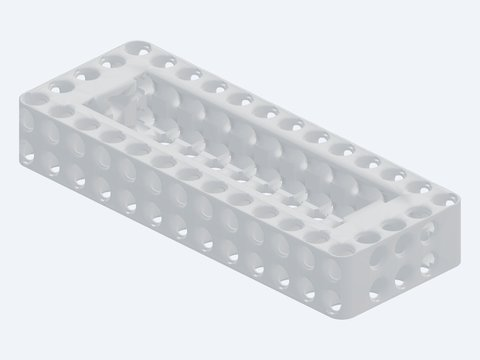
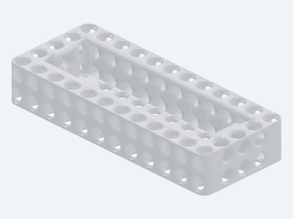

18650 電池盒 Technic 底座
18650 Battery Holder Technic Tray
仿「麵包板 Technic 底座」：把單節 18650 電池盒嵌進 76 × 21.3 mm 的槽，槽四角各有 5 × 2 mm 出線口；框是 13 × 5 × 2 格（長、高都和麵包板底座相同），上、下、四周都能用銷接到 LEGO Technic 結構上。
battery18650_with_holder_preview
重點規格
- 外形
- 103.4 × 39.4 × 15.8 mm
- 格數
- 13 × 5 × 2 Technic（長、高和麵包板底座相同）
- 電池盒槽
- 76 × 21.3 mm，不留間隙
- 出線口
- 槽四角各一，寬 5 × 深 2 mm
- 銷孔
- 59 垂直＋64 側面
放電池盒
- 頂部開口的槽 76 × 21.3 mm，不留間隙，靠緊配固定；長度取 76 mm，因為市售電池盒長度不太一致
- 底板 2.2 mm，框高 2 格（15.8 mm）和麵包板底座相同；18 mm 高的電池盒頂面高出框頂約 4.4 mm，手指捏得到
- 取出：從底板的孔往上推
出線口
- 槽的四個角各有一個出線口：沿槽寬方向 5 mm、往兩端牆內伸 2 mm，外緣和槽的長邊切齊，從槽底一路通到框頂
- 電池盒兩端的紅黑線可以從角落沿著出線口拉上來，不用從電池盒上方繞
- 兩端牆 y = ±8 的側孔幾乎整個落在出線口裡，電線也可以從側孔穿出去
垂直孔
- 外圈 32 個垂直孔上下貫穿（長邊各 13、短邊各 3），兩端都有 Ø6.2 × 0.8 沉頭，銷的凸緣能沉進去
- 底板 9 × 3 個貫穿孔，只取槽底下的格點；底板只有 2.2 mm，不做沉頭，主要用來把電池盒推出
- x = ±40 那兩排不開：這兩排孔的孔邊在 ±37.53，會跨在槽的端牆（±38）上
- 孔位和麵包板底座一樣落在中心線上（0、±8 … ±48）；長邊牆厚 9.05 mm、兩端牆 13.7 mm（出線口後面還有 11.7 mm）
側面孔
- 四邊各兩排水平孔（中心上下 ±4 mm），和垂直孔直角交叉，像十字交叉孔磚
- 側孔都直接穿透到槽內；短邊跳過角落兩列，那裡已有長邊的孔
建模與檢查
- 照麵包板底座的建模腳本改寫：每種孔只建一次，再用 PartDesign LinearPattern 複製；格數、槽尺寸、間隙、底板厚、出線口大小都在 Params 試算表；孔的排列與陣列數量綁定格數 nx、ny
- 用 build123d 探測 450 多個點：槽邊剛好在 ±38、±10.65 mm（76 × 21.3），出線口寬 5、深 2 mm、從槽底通到框頂，每個孔沿軸向都是空的
- 3MF 網格封閉、沒有非流形邊；Bambu Studio 命令列切片成功，預設設定約 3.4 小時，開口朝上平放即可、不需支撐
12 格版（整車用）
- battery18650_12_technic：同一支腳本改 nx = 12，框 95.4 × 39.4 × 15.8 mm，槽、出線口、孔徑都不變
- 端牆從 13.7 變 9.7 mm；端牆的孔在 x = ±44，離槽 3.5 mm、離外側 1.23 mm；底板孔 8 × 3（x = ±36 那兩列會跨在端牆上，不開）
- 曾用在差速轉向車：左右各一個直立、槽口朝外，夾住直立的 TT 馬達；12 格是端牆還放得下孔的最短長度。整車後來改用「雙 18650 電池盒 Technic 底座」和麵包板座背對背
待實測
- 槽不留間隙：列印後槽通常會略縮，電池盒可能要壓入；太緊時把 Params 的 hd_clear 改成 0.2 左右再重建
檔案下載
| 預覽 | 類型 | 說明／下載 | 大小 |
|---|---|---|---|
 | FCStd | FreeCAD 參數化模型 battery18650_technic.FCStd | 4.5 MB |
 | 3MF | 3MF（由最新 FCStd 匯出） battery18650_technic.3mf | 1.6 MB |
| PY | 建模腳本 build_18650_technic.py | 9 KB | |
| FCStd | 12 格版（整車用）：FreeCAD 參數化模型 battery18650_12_technic.FCStd | 4.2 MB | |
 | 3MF | 12 格版：3MF（由最新 FCStd 匯出） battery18650_12_technic.3mf | 1.5 MB |
| PY | 12 格版建模腳本 build_18650_12_technic.py | 9 KB | |
| PY | 共用模組：馬達座核心幾何、參數表、匯出與 GUI 重存 tt_adapter_core.py | 10 KB | |
| PY | 在 FreeCAD 介面重存檔案，寫入縮圖與顯示狀態 gui_finish.py | 2 KB |
FCStd 用 FreeCAD 1.1 開啟（參數在 Params 試算表）；3MF 可直接拖進 Bambu Studio 或其他切片軟體。